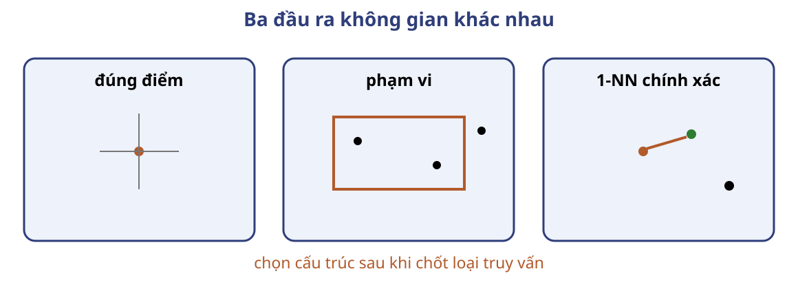
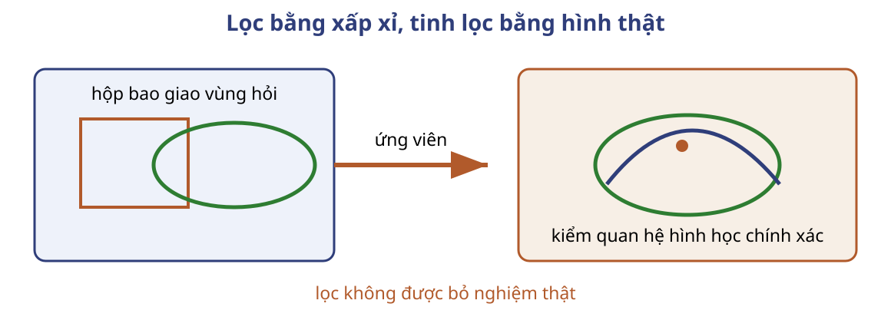
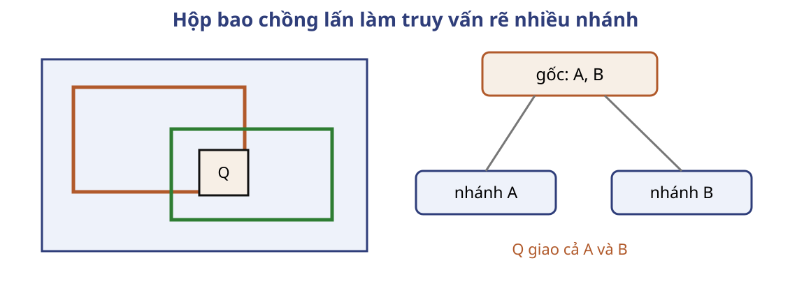
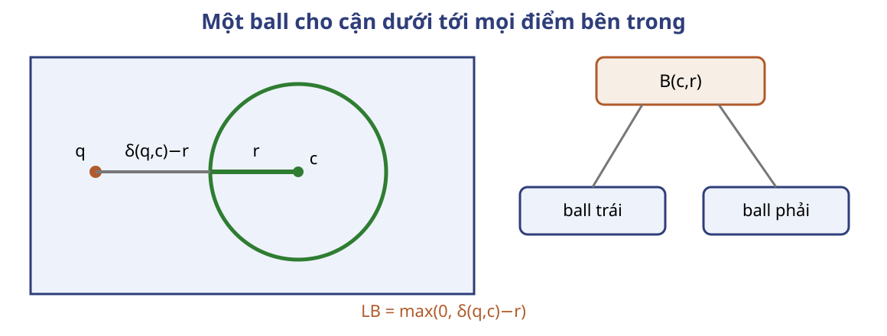
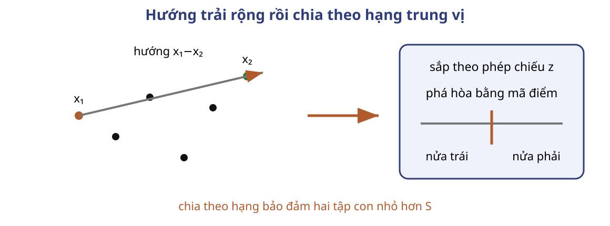
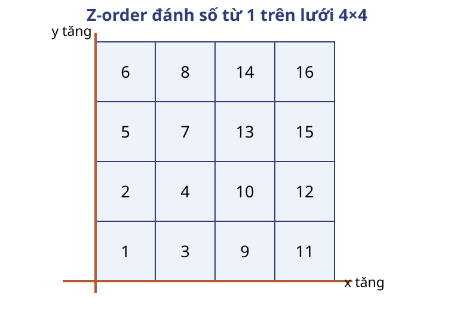
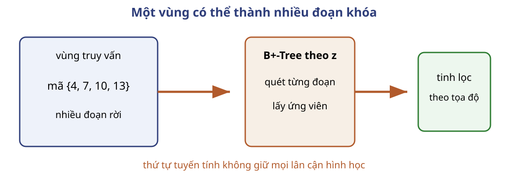

Câu hỏi: Với $R\ne\varnothing$, thêm một tài liệu không phù hợp; đại lượng nào chắc chắn giảm?
Độ chính xác.
Ảnh vệ tinh lớn cần truy cập theo vùng
Dữ liệu: ảnh vệ tinh dung lượng lớn và các đối tượng có vị trí.
Đầu ra: vật thể giao vùng hỏi hoặc trạm xăng gần nhất.
Quét toàn bộ dữ liệu cho mỗi cửa sổ hoặc điểm hỏi không khai thác vị trí.
Đầu ra quyết định cấu trúc

Lọc hộp bao rồi tinh lọc hình thật

R-tree tổ chức các hộp bao theo cây
Nút trong
Hộp bao của từng cây con.
Lá
Vật thể hoặc hộp bao của vật thể.
Hộp của các cây con được phép chồng lấn.
Hộp chồng lấn buộc phải đi hai nhánh

Lọc ứng viên trước, kiểm hình thật sau
gom(U,Q,A):
nếu U là lá: thêm mục có MBR giao Q vào A
nếu không, với mỗi con C:
nếu MBR(C) giao Q: gom(C,Q,A)
tinh_lọc(A,Q): trả các vật thể thật sự giao Q
R-tree không bảo đảm một đường tìm
Hộp tách tốt: ít nút và ít ứng viên.
Hộp chồng lấn: nhiều nút, nhiều ứng viên phải tinh lọc.
Chi phí cần tách: CPU kiểm giao, số nút hoặc trang đã đọc, và số ứng viên phải kiểm hình.
kd-tree giảm phép đo trên tập huấn luyện lớn
Đầu vào: $n$ điểm huấn luyện và điểm hỏi $q$.
Đầu ra: mọi điểm gần $q$ nhất.
Tìm kiếm 1-NN chính xác bằng quét tuyến tính cần đo $n$ khoảng cách cho mỗi truy vấn.
Mỗi nút chia đôi theo một tọa độ
Đầu vào truy vấn là một kd-tree đã được xây hợp lệ.
Khi xây: chọn trung vị theo chiều hiện tại, phá hòa bằng mã điểm.
nearest(root,q): return search(root,q,∅,∞)
search(U,q,best,τ):
nếu U là lá, với mỗi x trong U:
d ← δ(q,x)
nếu d < τ: best ← {x}; τ ← d
ngược lại nếu d = τ: best ← best ∪ {x}
nếu U là nút trong:
near, far ← hai con, near chứa q
(best,τ) ← search(near,q,best,τ)
nếu LB(q,far) ≤ τ:
(best,τ) ← search(far,q,best,τ)
trả (best,τ)
Cận dưới bảo đảm không bỏ nghiệm
Mệnh đề: nút bị cắt không chứa điểm có khoảng cách đến $q$ nhỏ hơn hoặc bằng $\tau$.
Vì $\delta(q,x)\ge\operatorname{LB}(q,U)>\tau$ với mọi $x\in U$.
kd-tree có trường hợp xấu tuyến tính
Cận tách tốt: giảm số nút và phép đo.
Cận không loại nhánh: $O(n)$ phép đo khoảng cách.
Với điểm $p$ chiều: $O(pn)$ phép toán số học.
Kiểm tra điều kiện hòa
Câu hỏi: Nhánh xa có cận $b=\tau$. Có được cắt nếu cần trả mọi hàng xóm gần nhất?
Không. Nhánh có thể chứa điểm ở đúng khoảng cách $\tau$.
ball tree phục vụ k-NN trên tập huấn luyện lớn
Nút
Ball $B(c,r)$ chứa mọi điểm của cây con.
Mục tiêu
Giảm phép đo khoảng cách mà vẫn trả 1-NN chính xác.
Vết số quyết định thăm hay cắt
Ball
$\delta(q,c)$
$r$
LB
Với $\tau=2{,}5$
$B_1$
3
1
2
thăm
$B_2$
5
2
3
cắt
$B_3$
4
1,5
2,5
thăm để giữ hòa
Bất đẳng thức tam giác cho cận ball

$$\operatorname{LB}(q,B)=\max(0,\delta(q,c)-r)$$
Truy vấn ball tree theo cận dưới
search(U,q,best,τ):
nếu U là lá, với mỗi x trong U:
d ← δ(q,x)
nếu d < τ: best ← {x}; τ ← d
ngược lại nếu d = τ: best ← best ∪ {x}
nếu không:
L,R ← hai con theo LB tăng dần
nếu LB(q,L) ≤ τ:
(best,τ) ← search(L,q,best,τ)
nếu LB(q,R) ≤ τ:
(best,τ) ← search(R,q,best,τ)
trả (best,τ)
Cách dựng Cornell chọn một hướng trải rộng

Chia theo hạng để đệ quy tiến triển
build(S), với S hữu hạn và ℓ ≥ 1:
nếu |S| ≤ ℓ: trả lá(S)
chọn x₀ tùy ý trong S
chọn x₁, x₂ theo hai bước điểm xa
z(x) ← (x₁-x₂)ᵀx
sắp theo (z(x), mã-điểm)
chia theo hạng trung vị thành S_L, S_R
c ← mean(S); r ← max δ(x,c)
trả nút(c,r,build(S_L),build(S_R))
Ba tính chất bảo đảm xây và tìm đúng
Chứa: ball của nút chứa mọi điểm trong cây con.
Phân hoạch: hai con chứa đúng các điểm của nút cha.
Tiến triển: với $|S|>\ell\ge1$, hai con không rỗng và nhỏ hơn cha.
Cận metric ở B01 bảo đảm truy vấn không cắt mất nghiệm.
Chi phí dựng và truy vấn khác nhau
Dựng
Cây cân bằng, sắp lại mỗi nút: $O(n\log^2n+pn\log n)$.
Truy vấn
Trường hợp xấu: $O(pn)$ cho điểm $p$ chiều.
Câu hỏi: Nếu $\operatorname{LB}=\tau$, có cắt ball không?
Không; vẫn có thể chứa nghiệm hòa.
Z-order đưa điểm về khóa tuyến tính
B+-Tree cần khóa có thứ tự.
Điểm $(x,y)$ không có một thứ tự tuyến tính duy nhất bảo toàn mọi lân cận.
Z-order gán một mã cho mỗi ô lưới.
Lưới Morton dùng mã từ 1 đến 16

Mã xen bit theo một quy ước cố định
Đổi sang tọa độ 0-based: $u=x-1$, $v=y-1$.
$$z=1+\sum_{j\ge0}(2u_j+v_j)4^j$$
Bit của $u$ đứng trước bit của $v$ trong mỗi cặp.
Một hình chữ nhật có thể thành nhiều đoạn mã

B+-Tree xử lý từng đoạn Z-order
Chỉ mục
Tìm đầu đoạn và quét khóa $z$.
Tinh lọc
Kiểm điểm hoặc vật thể với vùng hỏi.
Câu hỏi: Vùng ở trang trước có bốn đoạn khóa rời. Cần bao nhiêu lần tìm đầu đoạn nếu xử lý riêng từng đoạn?
Bốn lần.
Loại truy vấn và cận quyết định chỉ mục
Cấu trúc
Truy vấn
Không bỏ nghiệm
Chi phí cần đo
Chỉ mục đảo
Boolean trên từ
danh sách đầy đủ
mục danh sách đọc
R-tree
vùng, vật thể
hộp chứa hình
nút/trang, ứng viên, CPU
kd-tree
1-NN chính xác
cắt khi LB>$\tau$
$O(n)$ phép đo; $O(pn)$ số học
ball tree
1-NN metric
metric, ball chứa điểm
$O(n)$ phép đo; $O(pn)$ số học
Z-order
vùng qua khóa
đủ đoạn + tinh lọc
đoạn và ứng viên
Quy trình chọn chỉ mục
Chốt đầu vào, đầu ra và tập nền.
Chốt biểu diễn được sắp hoặc miền hình học.
Chạy vết tạo ứng viên.
Chứng minh điều kiện cắt hoặc lọc không bỏ nghiệm.
Tính phần phải đọc trong trường hợp xấu.
Kiểm tra tổng hợp trước bài tập
Câu hỏi: Chọn một truy vấn đã học và ghi bốn mục: đầu vào, tập ứng viên, phép kiểm chính xác, đơn vị chi phí.
Ví dụ R-tree: vật thể và vùng hỏi; MBR giao; kiểm hình thật; nút/trang, CPU và số ứng viên.
Bài tập trên lớp
31.2: tài liệu chứa ít nhất $k$ trong $n$ từ khóa.
25.2: chỉ mục cho truy vấn đúng tọa độ.
25.3: hàng xóm gần nhất bằng nhiều truy vấn vùng tròn.
Bài 31.2 — Đặc tả
Có $n\ge1$ từ khóa và $1\le k\le n$. Mỗi từ khóa có một danh sách docID tăng dần, có thể rỗng và không lặp docID.
Yêu cầu: tìm mọi tài liệu chứa ít nhất $k$ từ khóa.
$T=\sum_{i=1}^{n}|P_i|$. Sản phẩm: giả mã, bất biến, dừng, thời gian và bộ nhớ.
Bài 31.2 — Thiết kế đống tối thiểu
Câu hỏi: Đống tối thiểu (min-heap) giữ gì của mỗi danh sách? Khi docID nhỏ nhất xuất hiện ở nhiều đầu, xử lý ra sao?
Sản phẩm: vòng lặp quyết định mỗi docID một lần và bất biến chứng minh kết quả.
Bài 31.2 — Lời giải và chi phí
khởi tạo đống bằng đầu các danh sách chưa rỗng
lặp: lấy docID nhỏ nhất x; gom mọi đầu bằng x
tiến các danh sách vừa lấy; nếu số lần ≥ k thì xuất x
$O(n+T\log(n+1))$ thời gian; $O(n)$ bộ nhớ.
Bài 25.2 — Điểm nhà hàng
Quan hệ chứa tọa độ $(x,y)$ và tên nhà hàng. Mọi truy vấn cho một điểm và hỏi có nhà hàng đúng tại điểm đó hay không.
Yêu cầu: so sánh đường truy cập bằng R-tree và B-tree, rồi chọn một.
Giả thiết: so sánh hai tọa độ chính xác. Sản phẩm: khóa, ứng viên và bước kiểm tra.
Bài 25.2 — Khóa ghép phù hợp truy vấn điểm
Dùng B-tree trên khóa ghép $(x,y)$.
B-tree tìm trực tiếp một khóa theo thứ tự từ điển.
R-tree lọc MBR rồi vẫn phải kiểm tọa độ ứng viên.
Bài 25.3 — Nhiều truy vấn vùng tròn
Cơ sở dữ liệu hỗ trợ truy vấn vùng tròn đóng nhưng không hỗ trợ hàng xóm gần nhất.
Yêu cầu: mô tả thuật toán tìm hàng xóm gần nhất của điểm $P$ bằng nhiều truy vấn vùng.
Sản phẩm: dãy vùng, điều kiện dừng, chứng minh dừng/đúng và tập kết quả.
Bài 25.3 — Điều kiện dừng và đồng hạng
Tập điểm hữu hạn và không rỗng.
Dùng $0\le r_0<r_1<\cdots$ với $r_i\to\infty$.
Dừng ở vùng tròn đóng đầu tiên trả tập $A\ne\varnothing$.
Câu hỏi: Sau khi có $A$, phải trả một điểm hay mọi điểm gần nhất?
Bài 25.3 — Tinh lọc tập đầu tiên không rỗng
Gửi các vùng tròn đóng tâm $P$ với bán kính tăng.
Khi nhận $A\ne\varnothing$, tính $\delta(P,x)$ cho mọi $x\in A$.